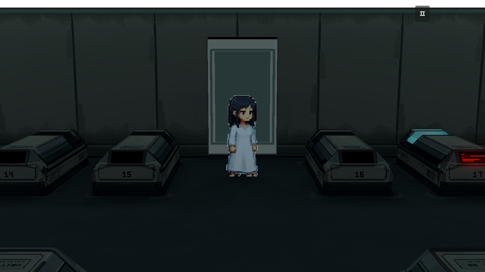
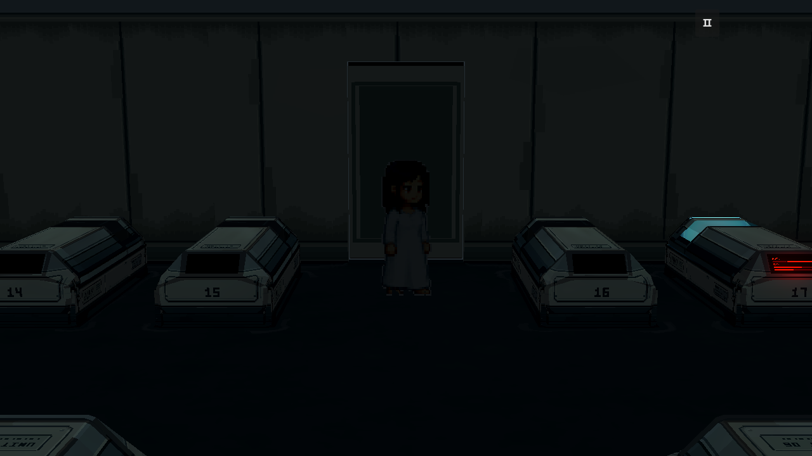

Room 1 — embedded main door r2
Independent geometry candidate. Same door sensor, slide distance and opening boundary as r1; no new panel or prop. These screenshots are runtime Godot captures, not a new room light bake.
Closed — ribbon lights on

Closed — L ribbon lights off
